Posiciones relativas de una recta y un plano
Caso 1: La recta viene definida por dos planos secantes
Sea la recta: 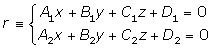 y el plano 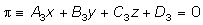.
Para estudiar la posición relativa de la recta y el plano discutimos el sistema:
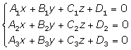
Si:
r = rango de la matriz de los coeficientes.
r'= rango de la matriz ampliada.
Las posicones relativas de la recta y el plano vienen dada por la siguiente tabla:
| Posición | r | r' |
|---|---|---|
| Recta contenida en el plano | 2 | 2 |
| Recta y plano paralelos | 2 | 3 |
| Recta y plano secantes | 3 | 3 |
Caso 2: La recta viene definida por un punto y un vector
Sea una recta definida por el punto A y el vector  . y un plano cuyo rector normal es
. y un plano cuyo rector normal es  . Las posiciones relativas de la recta y el plano son:
. Las posiciones relativas de la recta y el plano son:
| Posición | A | |
|---|---|---|
| Recta contenida en el plano | = 0 | |
| Recta y plano paralelos | = 0 | |
| Recta y plano secantes | ≠ 0 |
Recta contenida en el plano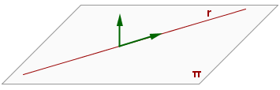
Recta y plano paralelos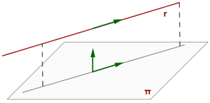
Recta y plano secantes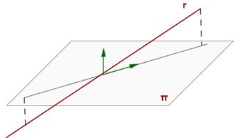
Ejemplos
Hallar la posición relativa de la recta y el plano:
1. 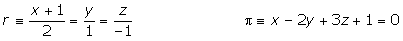
En primer lugar se pasan las ecuaciones continuas a ecuaciones implícitas.
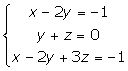
Hallamos el rango de la matriz de los coeficientes.
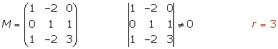
Determinamos el rango de la matriz ampliada.
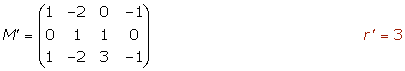
Comparamos los rangos
La recta y el plano se cortan en un punto.
2. 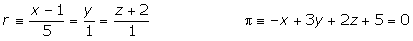
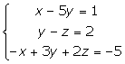
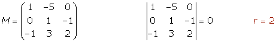
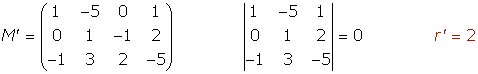
La recta está contenida en el plano.